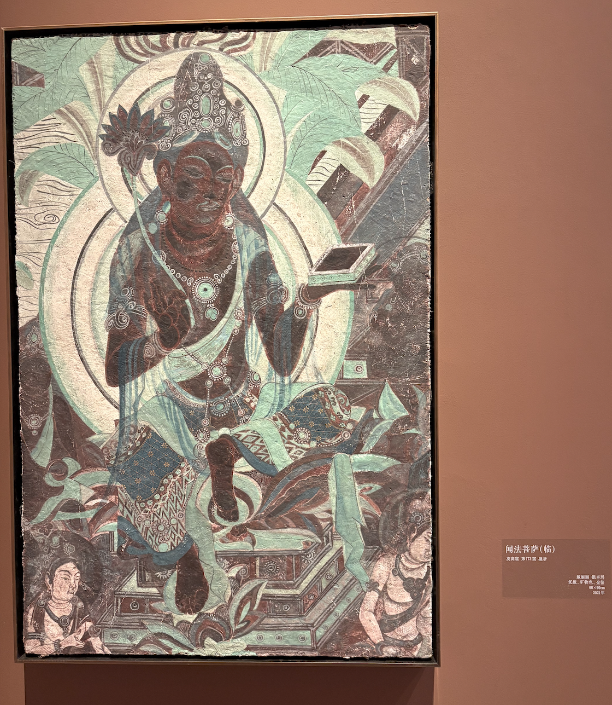
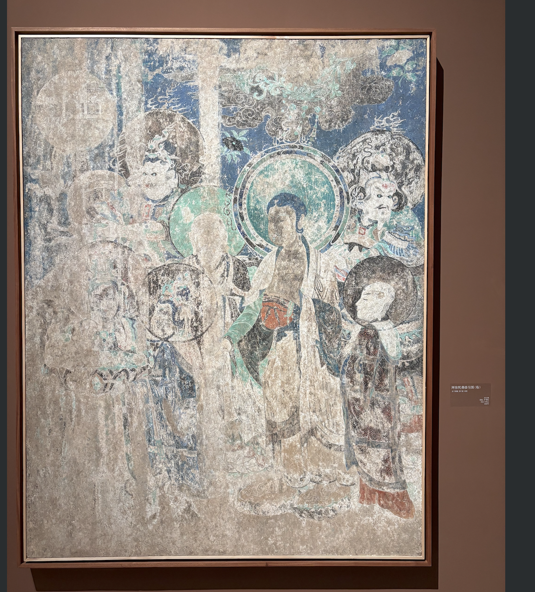
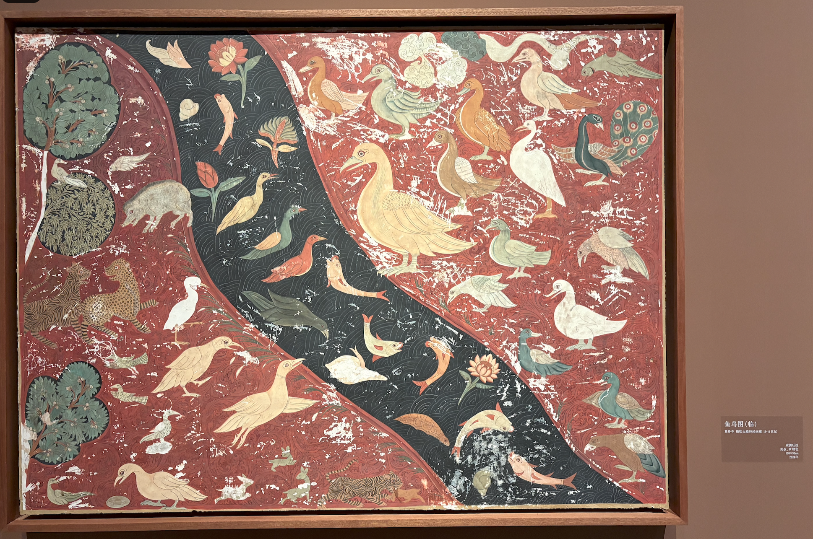
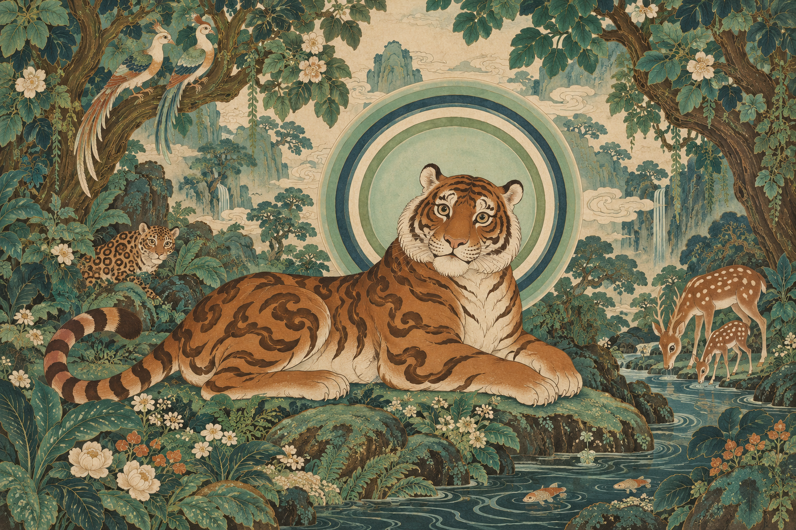
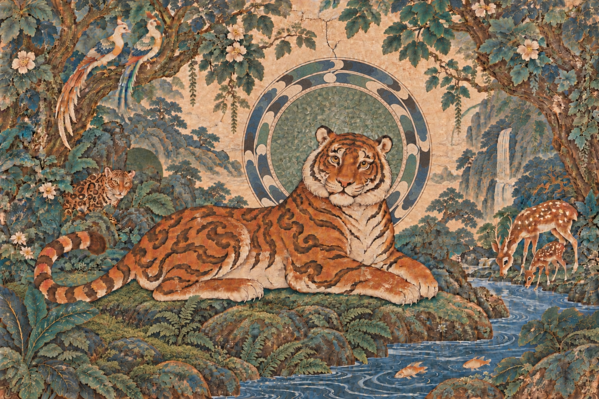

从三幅壁画开始
这件作品的起点，是一次展览里见到的奇特圆光：壁画静止不动，却有一种近似玻璃、水波，甚至引力透镜的视觉回转感。另外两幅壁画的配色与鸟兽形态，也逐渐进入这片森林。

一 · 矿物色的层次青绿、深褐与浅色彼此衬托，成为森林配色的起点。

二 · 如水波的圆光真正牵引这件作品的圆光：蓝绿色段长短不一，两圈圆头反向相接，白色曲线形成 S 形，静止中也有回转感。

三 · 平面的鸟兽世界红底中的虎、鸟与游鱼，有漆画般的装饰趣味。我选择让老虎成为主角。
画面如何慢慢确定

01 · 让虎王进入森林我选择让老虎成为主角，借用鸟兽壁画的平面趣味与矿物色，在森林中安排鸟、豹、鹿与游鱼。随后去掉虎脚下的繁花，让画面安静下来。

02 · 回到静止的环尝试动效之后，我重新看原画：吸引我的感觉并不依赖运动。于是回到静态，拉长蓝绿色段，调整内外圈的凸起方向，寻找反向接缝形成的 S 形。
03 · 留下这一刻让AI画了又画之后，最后选用了一版，虽不完美，但可完成，已经有光晕感，无需执着，知止亦为美。
灵感参考图为本人在展览现场拍摄的壁画临摹作品，用于记录创作来源；作品画面由 AI 辅助生成，经人工选择与调整。